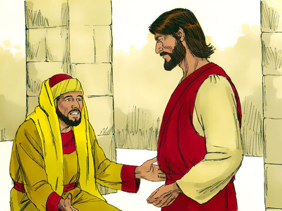
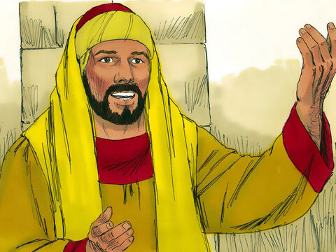
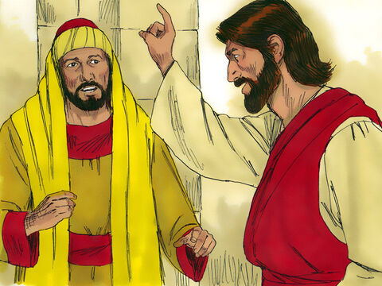
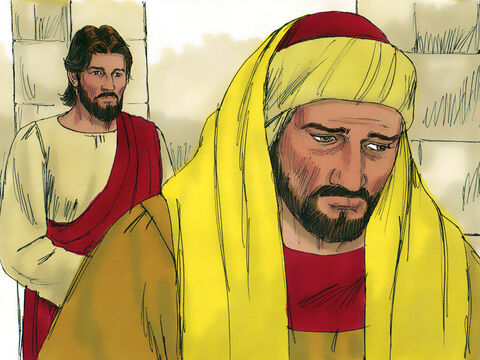
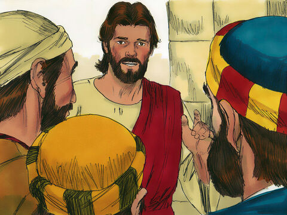
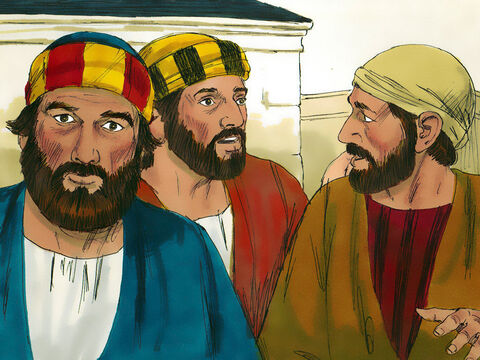
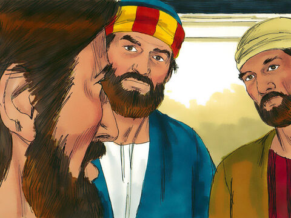
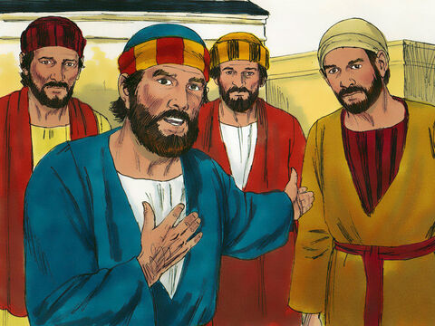
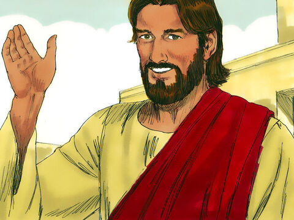

The Rich And The Kingdom Of God
And, behold, one came and said unto him, Good Master, what good thing shall I do, that I may have eternal life?
And he said unto him, Why callest thou me good? there is none good but one, that is, God: but if thou wilt enter into life, keep the commandments.
He saith unto him, Which? Jesus said, Thou shalt do no murder, Thou shalt not commit adultery, Thou shalt not steal, Thou shalt not bear false witness,
Honour thy father and thy mother: and, Thou shalt love thy neighbour as thyself.
The young man saith unto him, All these things have I kept from my youth up: what lack I yet?
Jesus said unto him, If thou wilt be perfect, go and sell that thou hast, and give to the poor, and thou shalt have treasure in heaven: and come and follow me.
But when the young man heard that saying, he went away sorrowful: for he had great possessions.
Then said Jesus unto his disciples, Verily I say unto you, That a rich man shall hardly enter into the kingdom of heaven.
And again I say unto you, It is easier for a camel to go through the eye of a needle, than for a rich man to enter into the kingdom of God.
When his disciples heard it, they were exceedingly amazed, saying, Who then can be saved?
But Jesus beheld them, and said unto them, With men this is impossible; but with God all things are possible.
Then answered Peter and said unto him, Behold, we have forsaken all, and followed thee; what shall we have therefore?
And Jesus said unto them, Verily I say unto you, That ye which have followed me, in the regeneration when the Son of man shall sit in the throne of his glory, ye also shall sit upon twelve thrones, judging the twelve tribes of Israel.
And every one that hath forsaken houses, or brethren, or sisters, or father, or mother, or wife, or children, or lands, for my name's sake, shall receive an hundredfold, and shall inherit everlasting life.
But many that are first shall be last; and the last shall be first.
Matthew 19:16-30
- 

- 
- 
- 
- 
- 
- 
- 
- 